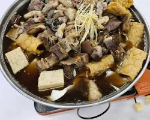
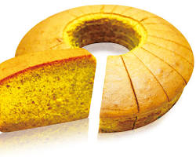
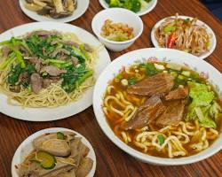
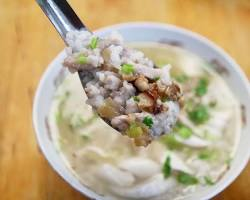
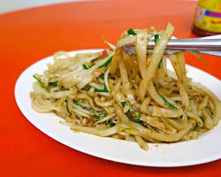

高雄在地美食與學習成果網

岡山羊肉爐
典故
岡山地區早期是羊隻集散地，加上在地有製作豆瓣醬的傳統，兩者結合發展出獨特的羊肉料理文化。羊肉爐更是其中的佼佼者，從早期的路邊攤發展到如今的專賣店林立，成為岡山最著名的代名詞。
做法
選用在地土羊肉，切塊後先以麻油、薑片爆炒去腥，再加入多種中藥材（如當歸、川芎、枸杞等）和特製豆瓣醬慢火燉煮數小時，直到羊肉軟嫩入味，湯頭濃郁甘甜。食用時可加入高麗菜、凍豆腐等配料，風味更佳。
回到頂部旗山香蕉蛋糕
典故
旗山曾有「香蕉王國」的美譽，香蕉產量豐富且品質優良。為了將過剩或外觀不佳但風味絕佳的香蕉做最有效的利用，當地的烘焙業者研發出了香蕉蛋糕，不僅解決了產銷問題，也創造出了具地方特色的甜點。
做法
將熟透的旗山香蕉去皮後壓成泥，加入麵粉、雞蛋、糖、植物油等材料充分混合攪拌成麵糊。將麵糊倒入模具中，放入烤箱以適當溫度烘烤至表面金黃、內部熟透即可。成品的蛋糕體充滿了香蕉的自然香氣和甜味，口感綿密。
回到頂部左營牛肉麵
典故
1949年後，大量國軍眷屬遷居至高雄左營的眷村。來自中國各地的軍眷將家鄉的麵食文化帶入，結合了四川的豆瓣醬、山東的麵條等元素，逐漸演變成獨具風味的台灣牛肉麵。左營眷村也因此成為牛肉麵的重鎮。
做法
湯頭通常以牛骨、多種辛香料（如花椒、八角）、豆瓣醬長時間熬煮而成，分為紅燒和清燉兩種主要口味。牛肉則選用牛腱或牛肋條，滷製到軟嫩適中。最後將煮好的麵條放入碗中，加入牛肉和熱騰騰的湯頭，撒上蔥花或香菜即可。
回到頂部鹽埕區虱目魚粥
典故
鹽埕區早期是高雄的商業中心，鄰近港口，漁獲資源豐富。虱目魚是南台灣重要的養殖魚類，因其營養價值高且價格親民，成為常民美食。當地的虱目魚粥店多半從清晨開始營業，為早起的工人和居民提供溫熱、營養的早餐。
做法
將新鮮虱目魚去鱗、去內臟後，取下魚肉、魚肚、魚皮等部位。魚骨用來熬煮高湯，米飯則加入高湯中煮成粥。顧客點餐後，將魚肉、蚵仔等配料放入粥中快速燙熟，起鍋前加入薑絲、芹菜珠、胡椒粉提味，並淋上一點香油。
回到頂部美濃客家粄條
典故
「粄條」是客家人的傳統主食之一，在美濃地區尤其盛行。早期農耕社會，客家人為了方便保存和攜帶食物，將米磨成漿後蒸熟切條，稱為「面帕粄」。其獨特的口感和百搭的特性，使其成為客家飲食文化的重要代表。
做法
將在來米浸泡後磨成米漿，薄薄一層倒入平底鍋或蒸籠中蒸熟，取出後折疊切成條狀。食用方式多樣，可做成湯粄條或乾炒粄條。乾炒粄條是將粄條與豬肉絲、豆芽菜、韭菜等配料，加入豬油和特製的紅蔥頭酥一起大火快炒，香氣撲鼻。
回到頂部網際網路與 AI 應用 - 課程心得報告
在「網際網路與 AI 應用」這門課中，我學習到如何利用 AI 工具協助建立網站。一開始操作時覺得有點困難，對於指令與流程不太熟悉，但在不斷嘗試後，逐漸了解 AI 能加快網站設計的速度，也能提供許多創意建議。雖然過程具有挑戰性，但整體來說非常有趣，也讓我對未來應用 AI 更有信心。